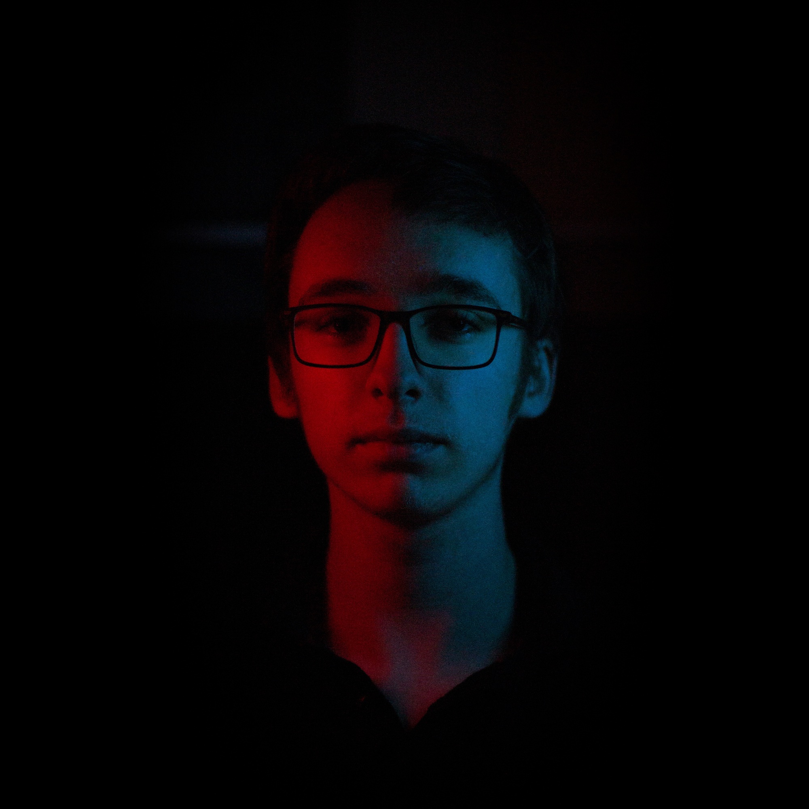

David Tourdot-Fuentes

Passionné de jeux vidéos et musicien depuis mon plus jeune âge,
mon objectif est de créer des experiences sonores uniques
pour les joueurs.
Mes connaissances en intégration sonore pour le jeu vidéo
me permettent de créer des univers sonores interractifs complexes
tout en étant en accord avec la direction artistique du jeu.
A travers ce site, découvrez mon univers et interragissez avec mes projets et productions !
Mes Projets
En savoir plus
Jeu Vidéo
Mai 2023
Avril 2023
Darkest Canopy est un Jeu Vidéo de combat a la première personne dans lequel vous incarnez un archer capable de ralentir le temps.
A vous d'affronter les monstres du temple pour vous libérer de la malédiction
Postes :
- Compositeur
Points Forts :
Les compositions épiques et entrainantes de Darkest Canopy permettent de motiver le joueur dans ses combats et d'accompagner l'arrivée des vagues de monstres pour aider le joueur a se surpasser.
En savoir plus
Court Métrage
Juillet 2023
Janvier 2023
Rien que la fin du monde est un Court Métrage étudiant 3iS Bordeaux dans lequel j'ai pu m'occuper de tout le sound design.
Postes :
- Sound Designer
Points Forts :
Le sound design de
Rien que la fin du Monde réside dans une
re-création sonore d'objets et d'évenèmenents a l'échelle
microscopiques amplifiés.
Cela permet de donner une
profondeur au personnage pour permettre d'aidera à faire
passer les émotions a travers des plans contemplatifs.
En savoir plus
Court Métrage
Juillet 2023
Janvier 2023
La Route des Sommets est un Court Métrage étudiant 3iS Bordeaux dans lequel j'ai pu m'occuper de toute la composition de la bande son
Postes :
- Compositeur
Points Forts :
Pour la musique de La Route des Sommets, je
suis parti sur cette dualité des personnages, l'une plutot
rurale et l'autre ayant envie de voyage a travers les
grandes villes du monde.
Cette bande son est donc un
subtil mélange entre sonorités acoustiques et sonorités
electroniques tout en illustrant les magnifiques paysages du
pays basque.
En savoir plus
Jeu Vidéo
Février 2023
Janvier 2023
Jeu Vidéo créé en une semaine durant la Winter Jam 2022.
Lofi Clicker est un clicker basé sur la synchronisation rythmique avec la musique.
Postes :
- Sound Designer
- Intégrateur sonores sur FMod & Unity
- Composition
- Programmation du système de synchronisation & communication entre FMod et Unity (C#)
Points Forts :
Créé avec le moteur audio FMod, Lofi Clicker m'a permis de créer une alternative au sytème de detection de tempo de Wwise. L'intégration sonore de ce jeu est donc dynamique et synchronisé avec le tempo musical
En savoir plus
Jeu Vidéo
Juillet 2023
Décembre 2022
Jeux Vidéo d'enquête narratif, Phantom Memories est une production 3iS Bordeaux né de la fusion entre la classe de 5ème année Animation Jeux Vidéo et de la classe de 3ème année Son Sound Design
Postes :
- Lead Sound Designer
- Intégrateur Sonore Wwise & Unity
- Compositeur d'une grande partie des musiques
Points Forts :
Phantom Memories est une pure production 3iS Bordeaux a grande ambition dans laquelle chaque étape de la production a été fait main, de l'enregistrement des sons jusqu'a l'enregistrement du thème original au violoncelle
En savoir plus
Animation
Juillet 2023
Octobre 2022
Polarnatt est un Court Métrage d'animation 3iS Bordeaux de la classe d'Animation Jeu Vidéo 3ème Année. J'ai eu l'opportunité de créer l'entièreté du son du court-métrage
Postes :
- Sound Designer
- Monteur & Mixeur (Sound Design, Musiques et Voix)
- Compositeur de toute la bande son
Synopsis :
Tout les 6 mois sur Polarnatt, les
gardiennes s'affrontent pour désigner la future déesse : un
combat opposant la gardienne du jour, et la gardienne de la
nuit
La gagnante reçoit la pierre lui permettant de
veiller sur la saison future.
En savoir plus
Installation
Décembre 2022
Octobre 2022
Le Souvenir des Evanders est une installation sonore immersive crée au sein de 3iS Bordeaux sur le theme du jeu vidéo Phantom Memories
Le systeme interractif complexe créé sur Ableton et Max4Live permet une évolution de la bande son suivant l'intéraction avec les objets du décors
Postes :
- Sound Designer
- Programmeur Ableton Max4Live
- Compositeur
Synopsis :
Le Souvenir des Evanders est une immersion dans l'univers du Jeu Video Phantom Memories. Ici, les visiteurs viennent fouiller les décombres de l'ancien Manoir des Evanders.
En savoir plus
Podcast Audio
Décembre 2022
Septembre 2022
Podcast Audio fictif de 12 minutes sur le métier du doublage.
Postes :
- Monteur Son
- Mixeur Son
- Compositeur
Points Forts :
Pour La Sonde Multimédia, l'objectif était de créer un podcast audio en utilisant le thème du doublage français et les codes des podcasts actuels (présentateur, générique, interviews, publicité, ..)
En savoir plus
En savoir plus
Animation
Mai 2023
Mai 2023
Exercice de re-création du sound design de la bande annonce de Wall-E
Postes :
- Foley Artist
- Mixeur Son
Points Forts :
Dans cet exercice d'une durée de 6 heures, le but était de re-sound designer une petite vidéo de 2min a l'aide uniquement d'objets du quotidien enregistrés en session foley (outils de bricolage, bouts de plastiques, perceuse, petits objets métalliques, ...).
En savoir plus
Animation
Mai 2023
Mai 2023
Exercice d'intégration audio, de sound design et de composition sur le mini-jeu Survival Shooter
Postes :
- Sound Designer
- Intégrateur sonore sur FMod & Unity
Points Forts :
Survival Shooter m'a permis de couvrir l'ensemble de la chaîne de production audio dans le jeu vidéo, de la création du son a l'intégration dans le moteur Unity.
En savoir plus

Jeu Vidéo
Février 2022
Janvier 2022
Jeu Vidéo créé en un mois pour la Simiji Universe GameJam. Hide & Flee est un platformer basé sur les énigmes et l'introspection.
Hide & Flee possède une intégration sonore réaliste et immersive dont les interractions audios se basent sur l'avancement dans l'histoire et l'apparition du danger
Postes :
- Sound Designer
- Intégrateur sonores sur FMod & Unity
- Composition
Points Forts :
Suite a une partie de cache-cache qui tourne mal, une petite fille va devoir affronter sa plus grande peur, et surmonter un lourd passé.
Logiciels Utilisés
Wwise
FMod Studio
Unity Engine
Unreal Engine
Adobe Audition
Bitwig Studio
Max MSP
Reaper
ProTools
Dante
Ableton
Playground
Darkest Canopy : Bande Son Interractive
Pour le Jeu Vidéo Darkest Canopy, le choix s'est
porté sur une transition fluide et dynamique de musique.
Le gameplay oscille entre des phases de combat et des phases
d'exploration, la bande son évolue donc pour s'adapter a ces différents gameplays.
Cliquez sur le bouton pour lancer la musique et jouez avec le curseur pour
la faire évoluer.
Phantom Memories : Système de MindMap
Ouvrir / Fermer
la MindMap
Démarrer / Stopper
la connection
Echouer la connexion
Réussir la connexion
Dans le jeu Phantom Memories, découvertes soupçons et reflections du joueur
son repertoriés dans la "MindMap". C'est un univers fictif, représentation de la
conscience du personnage jouable dans lequel le joueur va passer beaucoup
de temps afin de poser des reflection et établir des connexions entre les différentes
trouvailles et discussions au sein du Manoir. Le sound design a donc été pensé
comme un endroit calme et posé, idéal pour réfléchir.
Cliquez sur les boutons pour ouvrir la MindMap, démarrer une connexion, puis
réussir ou échouer la connexion.
Hide And Flee : Transitions d'ambiances
Hide and Flee est un jeu d'exploration / plateforme en 2D. Le joueur
traverse différentes zones dans laquelle chaque ambiance doit
être différente. Cette exemple est un cas possible d'interactivité de l'ambiance
sonore dans le jeu. Ici, l'ambiance évolue suivant la position
du joueur, passant d'une clairière paisible a une forêt épaisse de façon
fluide
Cliquez sur le bouton pour lancer l'ambiance et jouez avec le curseur pour
la faire évoluer.
Lofi Clicker : Composition décomposée
Play / Stop
Musique Forêt
Violoncelle
Piano
Violon
Hautbois
Play / Stop
Musique Désert
Banjo
Flute
Guimbarde
Percussions
Sifflement
Play / Stop
Musique Ville
Basse
Fx
Percussions
Synthé Arpèges
Synthé Accords
Lofi Clicker étant un jeu de rythme, la musique possède
une place centrale dans le gameplay du jeu.
Lors du déblocage de tel ou tel instruments, nous voulions que le joueur
ait la main sur les différentes pistes musicales débloqués et qu'il puisse recomposer
la musique a sa manière lorsqu'il possède toute les pistes.
Cliquez sur les boutons pour lancer les différentes pistes musicales.
Website made by David Tourdot-Fuentes with FMod Integration